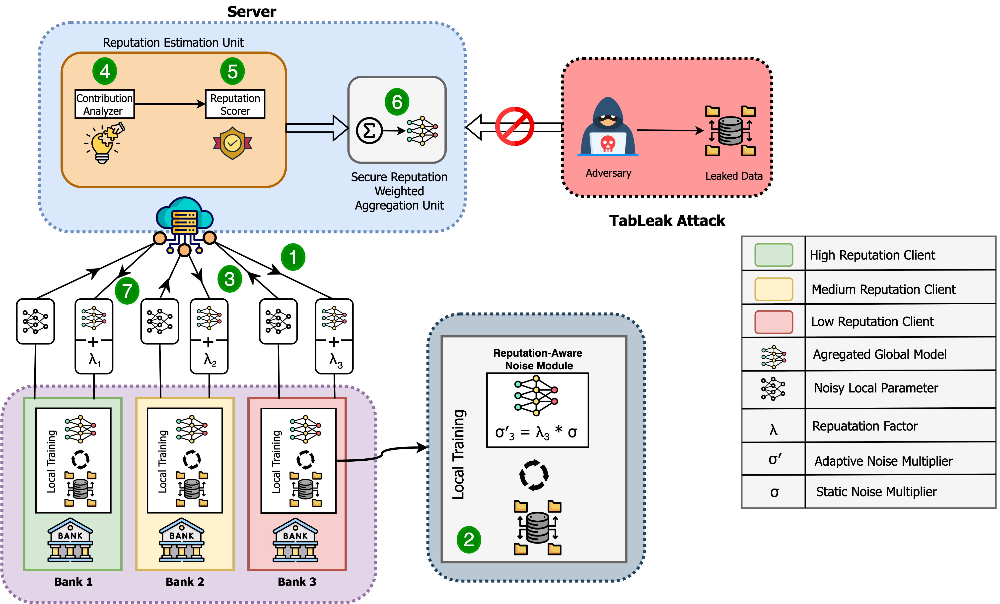
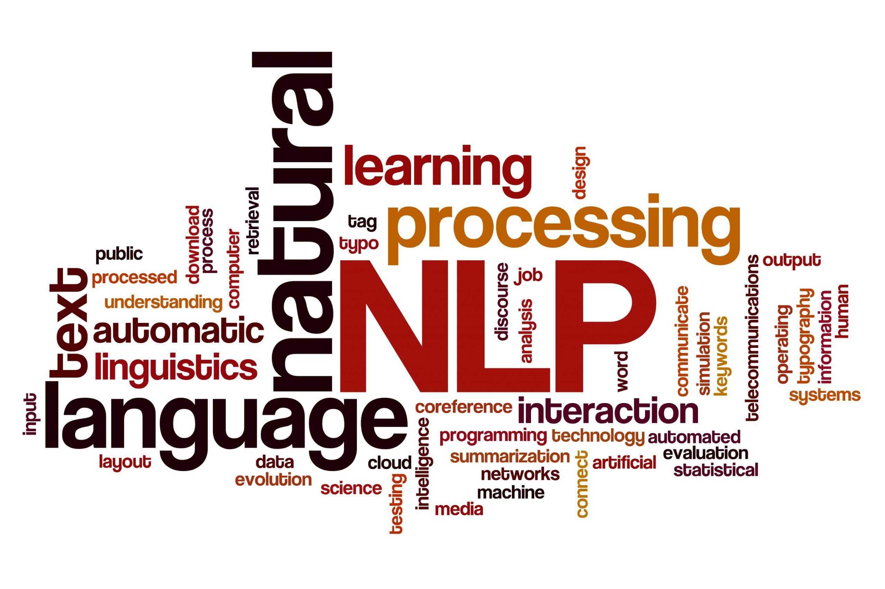

Member and Researcher
Next Tech Lab AP • Andhra Pradesh, India
October 2024 - Present
I'm Manjil, a final year B.Tech Computer Science and Engineering student at SRM University-AP, India. I am passionate about advancing artificial intelligence research, particularly in privacy-preserving machine learning.
Research Focus: Trustworthy AI, Federated Learning, Generative Models
A*STAR Institute of High Performance Computing • Singapore (Remote)
August 2025 - Present
Research Area: Federated Learning, Generative Models
Indian Institute of Technology-Dhanbad • India (Onsite)
May 2025 - July 2025
Outcome: Implemented and tested a federated learning setup on resource-constrained IoT devices (Raspberry Pi 0/4B/5, Jetson Nano).
Scientific Reports (Springer Nature)
June 2025 - Present
Next Tech Lab AP • Andhra Pradesh, India
October 2024 - Present



FinSurvival Challenge, ICAIF'25 - Singapore 2025
Secured 3rd place ($250 prize) achieving a C-index of 0.8472
SRM University-AP
Andhra Pradesh, India
2022 - 2026
Advisor: Dr. M Krishna Siva Prasad

Ex Senior Member - Outgoing Global Talent (oGT) at AIESEC in Amaravati.

Ex Vice President- Space Club @ SRM University-AP, India.